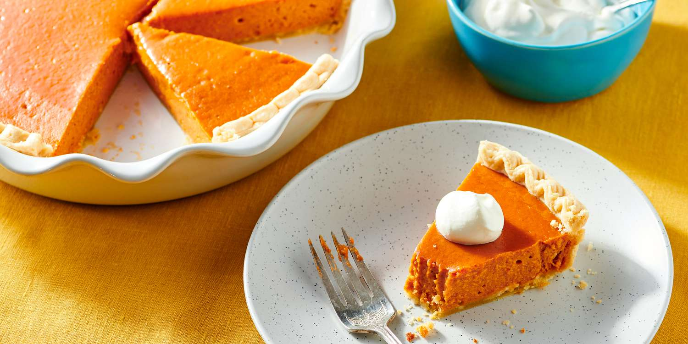

Pumpkin Pie

Description
A classic autumn dessert. Made from scratch with pastry crust and
deliciously spiced pumpkin filling.
Ingredients
Pastry Crust:
- 1 1/3 cups of all-purpose flour
- 1/2 teaspoon salt
- 1/2 cup cold butter or shortening
- 3 tablespoons cold water, or more as needed
Filling:
2 cups mashed, cooked pie pumpkin
1 (12 fluid ounce) can of evaporated milk
2 large eggs, beaten
3/4 cup of packed brown sugar
1/2 teaspoon of ground cinnamonn, or more to taste
1/2 teaspoon ground ginger, or more to taste
1/2 teaspoon ground nutmeg, or more to taste
1/2 teaspoon salt
Steps
-
Step 1: Preheat the oven to 400 degrees F (200 degrees C).
-
Step 2: To make the pastry crust: Mix flour and salt in a bowl.
Cut in butter with a pastry blender until mixture resembles coarse
crumbs. Mix in 3 tablespoons water, one at a time, until dough is
mosit enough to hold together. Add up to 1 more tablespoon water
if needed.
-
Step 3: Shape dough into a ball with lightly floured hands. Roll
dough on a lightly floured surface to a thickness of 1/8 inch.
Place a 9-inches pan upside-down on the dough; use a sharp knife to
cut a circle of dough 1 1/2 inches larger than the pie pan. Remove
and discard dough scraps and set pie pan aside.
-
Step 4: Gently roll circular piece of dough around the rolling
pin; transfer it right-side up over the pie pan. Unroll, easing
dough into the bottom of the pan. Use two hands to flute dough
around the top edges.
-
Step 5: To make the filling: Beat pumpkin, evaporated milk, brown
sugar, eggs, cinnamon, ginger, nutmeg, and salt in a large bowl with
an electric mixer until well combined. Pour into prepared crust.
-
Step 6: Bake in the preheated oven until a knife inserted into the
filling 1 inch from the edge comes out clean, 40 to 60 minutes. Cover
the edges with foil if needed to prevent from burning as the filling
cooks.
-
Step 7: Remove from the oven and cool to room temperature before
serving.